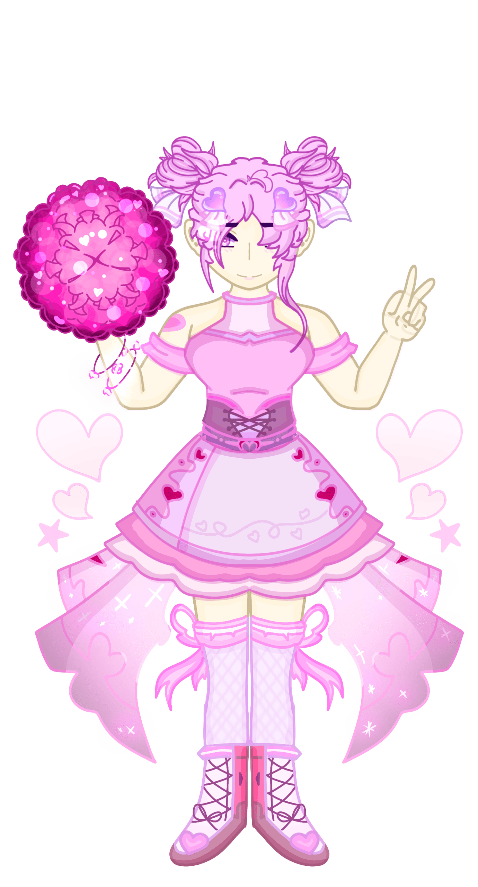
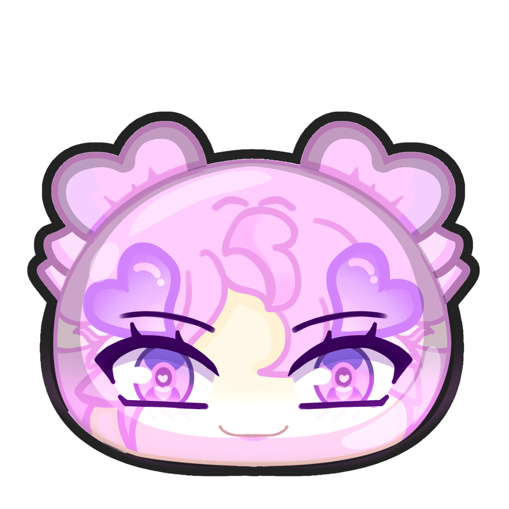
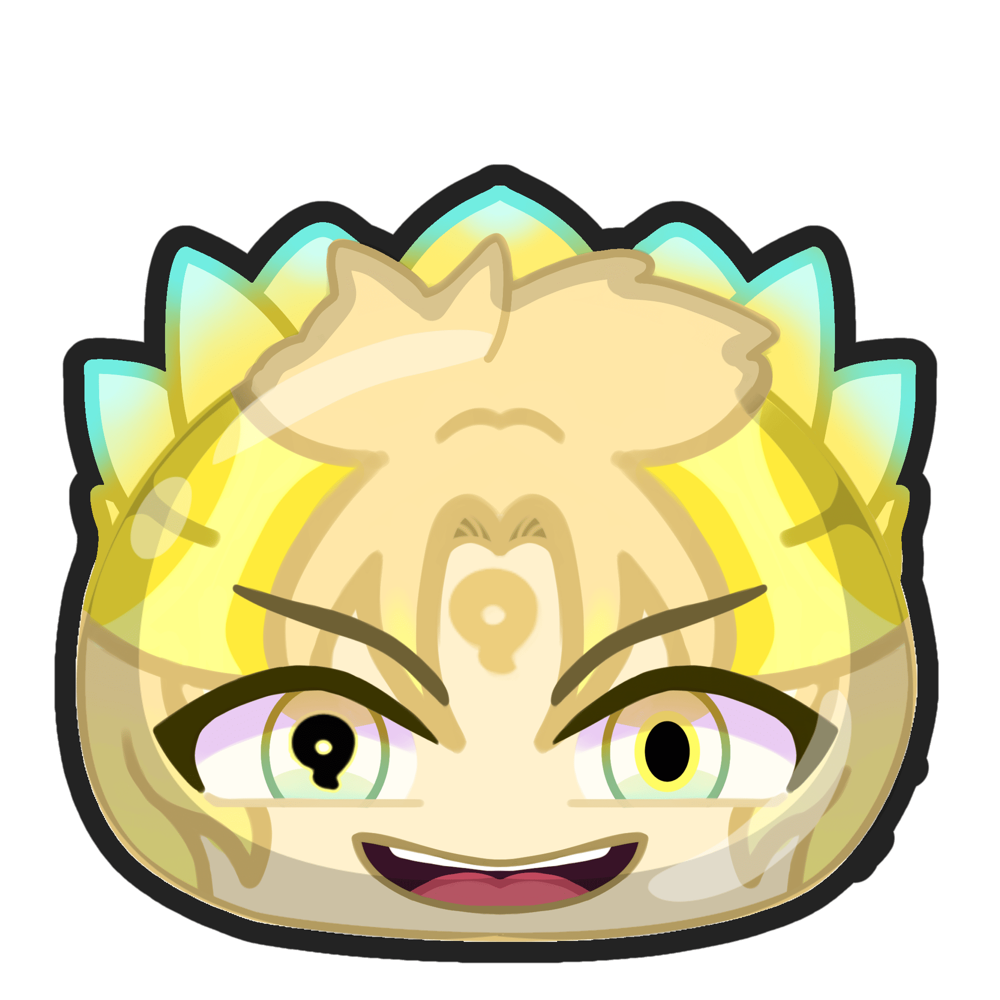
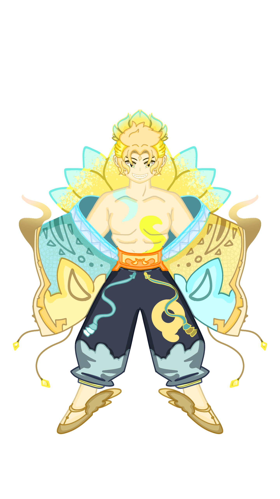

UNA SERIE QUE EXPLICA LOS ACONTECIMIENTOS DEL PASADO PASADO, ANTES DE TODO Y EL INICIO DEL CICLO YOKAI, PRESENTANDONOS A LOS ASOMBROSOS, GRAMUROSOS Y FUERTES LIDERES DE CADA TRIBU, TODO SERA UN TRANQUILO LIDERAZGO??....O NO?
PARECE QUE ALGO SE ACERCA Y NO TIENE GANAS DE PLATICAR.
|  |  |
PRESENTAMOS A HITOMI PURICHI, LA GRAN LIDER DE LA TRIBU GUAPA, UNA ANIMADORA DE ENCANTADORA BELLEZA LA CUAL NO DUDARA EN ANIMAR A QUIEN MAS LO NECESITE, SU PAPEL ES DE GRAN IMPORTANCIA Y SE DICE QUE ES LA VIVA IMAGEN DE LA TRIBU... VAMOS A ANIMAR, 1, 2, 3 Y YA!!!
forma de activacion: tener al menos 2 yokais guapos en el equipo. |
|
PRESENTAMOS A HARUKI FUSHIGI, EL GRAN LIDER DE LA TRIBU MISTERIOSA, UN GRAN Y CARISMATICO JEFE DE CARNAVAL QUE ENCUENTRA EL RITMO EN CUALQUIER PARTE, A DONDE VAYA EL CARNAVAL ESTARA, JUEGA UN PAPEL IMPORTANTE EN SU TRIBU Y SU GRAN AURA MISTERIOSA Y DESLUMBRANTE PRESENCIA DEMUESTRA DE LO QUE ESTA HECHO... ¿ALGUIEN PIDIO UN POCO DE MISTERIO?, ES HORA DEL CARNAVAL Y A FESTEJAR!!!
forma de activacion: tener al menos 1 yokai misterioso en el equipo (no cuenta el). |
 |  |